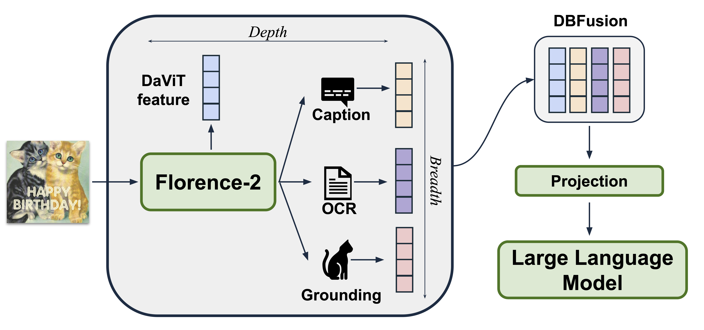

LLaVA v.s. Florence-VL
Comparison of LLaVA-style MLLMs with our Florence-VL. LLaVA-style models use CLIP, pretrained with contrastive learning, to generate a single high-level image feature. In contrast, Florence-VL leverages Florence-2, pretrained with generative modeling across various vision tasks such as image captioning, OCR, and grounding. This enables Florence-2 to flexibly extract multiple task-specific image features using Florence-2 as the image encoder.
Florence-VL
An overview of Florence-VL, which extracts visual features of different depths and breaths from Florence-2, combines them using DBFusion, and project the fused features to an LLM's input space.
Breadth. We focus on three distinct tasks that contribute to image understanding, resulting in three different image embeddings:
- Detailed Image Caption: Describe what is shown in the image with a paragraph.
- OCR: Provide the text shown in the image.
- Dense Region Caption: Locate the objects in the image, with their descriptions.
Visualization

Training Recipe
17M Detailed Image Caption. In order to build a state-of-the-art MLLM, we use images from CC12M, Redcaps, and Commonpool during the pretraining stage, with detailed captions sourced from PixelProse and ShareGPT4V .
10M High Quality Instruction Data. For the instruction tuning stage, we also curate our high quality instruction tuning datasets, sourcing from Cambrian-7M, Vision Flan, ShareGPT4V, along with additional data from Docmatix to improve chart and diagram comprehension.State of the Art MLLM Performance
BibTeX
@article{chen2024florence,
title={Florence-VL: Enhancing Vision-Language Models with Generative Vision Encoder and Depth-Breadth Fusion},
author={Chen, Jiuhai and Yang, Jianwei and Wu, Haiping and Li, Dianqi and Gao, Jianfeng and Zhou, Tianyi and Xiao, Bin},
journal={arXiv preprint arXiv:2412.04424},
year={2024}
}